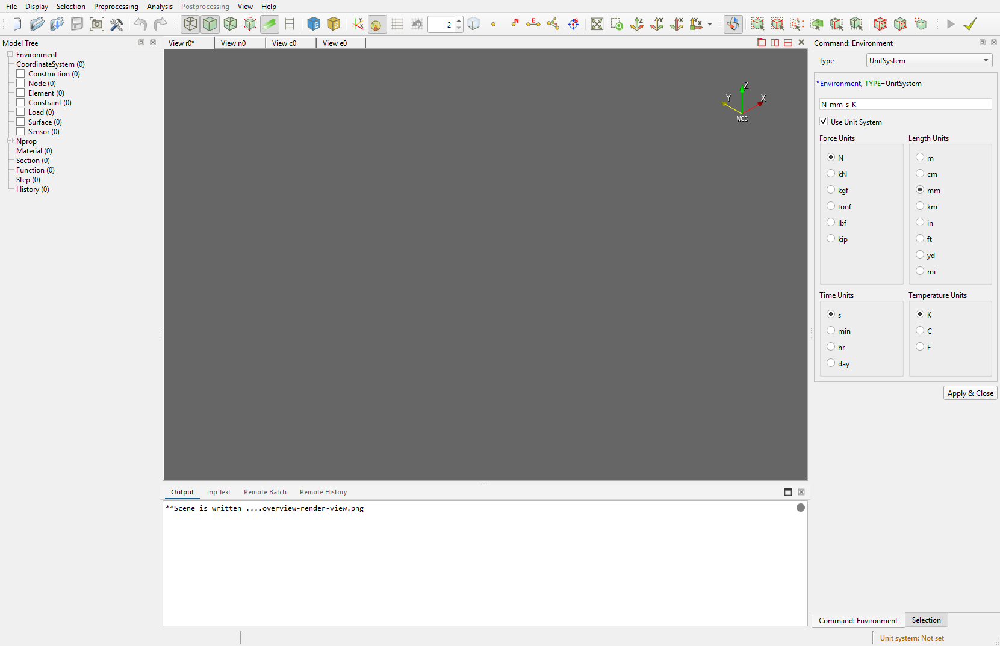

2.3 View and Display
This page covers building the screen layout, aiming the camera, switching rendering representations, and toggling labels and measurement tools.
For automation of the same actions, see Remote Control View and Remote Control Display.

The Render View is the central workspace for viewing the model and results. The Display menu and Display toolbar change its representation, displayed items, camera direction, and measurement tools.
2.3.1 Central views and render views
The central area can hold multiple views as tabs or splits at the same time.
- Render View: 3D view of the model and results. id:
r0,r1, … - Node Table: node data table. id:
n0, … - Element Table: element data table. id:
e0, …
Two key concepts:
- currentView: the central view that currently has focus. It can be a table, not just a render view.
- activeRenderView: the render view that display, camera, and visibility commands target by default. Even when the currentView is not a render view, the last active render view is tracked separately.
Adding, activating, and closing views uses the GUI tab/split UI. The same actions are scriptable via Remote Control view.
The last remaining render view cannot be closed.
Postprocessing PostPlot views open as floating modeless windows and are tracked by cN ids. Use Show Plot in the XY Plot Editor or Remote Control view add post-plot to create them.
2.3.2 View menu — dock and toolbar visibility
The top-level View menu toggles dock widget and toolbar visibility. It is not a camera control.
Dock widgets:
- Output Window
- Model Tree
- Command
- Selection Widget
- Chart
- Digital Twin Widget
Toolbars:
- File
- Display
- Selection
- Postprocessing
- Analysis
The same toggles are reachable from each toolbar's right-click popup.
2.3.3 Display menu
2.3.3.1 Representation submenu
Sets the rendering style for the target render view.
- Wireframe: wireframe representation. RC:
representation wireframe - Surface: surface representation. RC:
representation surface - Transparency: toggle transparent rendering. RC:
transparency - Shrink: toggle element shrink. RC:
element-shrink - Section View: toggle section-view clipping. RC:
section-view
When Section View is on, Shell/CompositePlate structural layer stacks are shown through the thickness. If an NSLayer exists, it is shown as a separate non-structural layer outside the structural top side and is not a stress/strain contour target. When Section View is off, only the structural body is shown.
Remote Control collapses the three representation modes (surface, wireframe, both) into one command.
2.3.3.2 Parallel Projection
Standalone toggle in the Display menu. Switches between perspective and parallel projection.
Same action via Remote Control: parallel-projection.
2.3.3.3 Shading Color submenu
- Shading by Element Type: RC value
element-type - Shading by Section: RC value
section
Automation: shading-color <none|element-type|section>.
2.3.3.4 Display Control submenu
Each item works in both preprocessing and postprocessing. Toggle command: display-control <item> <on|off>.
- Origin Axes: RC
<item>origin-axes - Corner Axes:
corner-axes - Grid:
grid - Auto Grid Spacing: separate command:
grid-spacing set auto - Dimension Box:
dimension-box - Node:
node - Node Label:
node-label - Element Label:
element-label - ECS:
ecs - Sensor Label:
sensor-label
2.3.3.5 View Direction submenu
Quick camera changes for the target render view.
- View Reset: default fit. RC:
camera fit - Area Zoom: zoom to a screen-drawn rectangle (interactive only)
- Iso Z/Y/X: isometric. RC:
camera view iso-z|iso-y|iso-x - +X / −X / +Y / −Y / +Z / −Z: axis-aligned view. RC:
camera view +x|-x|+y|-y|+z|-z - Rotate ±X/Y/Z: rotate the current camera. RC:
camera rotate ±X|±Y|±Z - Set User View ½/3: save the current camera into a user-view slot (interactive only)
- Unset User View ½/3: clear a user-view slot (interactive only)
- User View ½/3: recall a saved user view (interactive only)
For exact position, focal point, and roll, use Remote Control camera set --position ... --focal-point ... --view-up ....
2.3.3.6 Tool submenu
Place measurement tools inside a render view.
- Distance Tool: distance between two points
- Angle Tool: angle defined by three points (p1, center, p2)
- Clear Tools: remove all tool widgets from the current render view
Automation behavior:
- Calling without coordinates enters interactive picking mode in the GUI.
- Passing coordinates places a completed tool directly — Remote Control
tool distance <p1> <p2>,tool angle <p1> <center> <p2>. - Rejected when another tool placement is in progress or the view is in a deformed state.
Clear Toolsis active only when there is at least one tool to clear.
2.3.4 Grid spacing
The Auto Grid Spacing action in the Display menu and the Display toolbar adjusts spacing to fit the current work-plane view.
- It changes the spacing value only; grid on/off state is left alone.
- It does nothing when grid is off, or when an oblique view angle is hiding the work-plane grid.
- For automation, history records the semantic tail
grid-spacing set autoinstead of the resolved number.
To set or query the value directly, use Remote Control grid-spacing.
2.3.5 Targeting another render view
Remote Control commands accept --view-id <rN> to apply display, camera, or visibility changes to a specific render view without changing currentView or activeRenderView. In the GUI, the equivalent flow is to activate the target render view first.
2.3.6 Mouse view navigation
The render view camera can be manipulated with the mouse in any interaction mode (including while picking nodes) — no mode switch is needed.
| Action | Input |
|---|---|
| Zoom | Wheel, or Shift + middle-button drag |
| Pan | Ctrl + middle-button drag |
| Rotate | Middle-button drag |
- Trackpad: A trackpad has no middle button, so use Alt + left button in its place (hold Alt and drag with one finger = rotate, + Ctrl = pan, + Shift = zoom). Two-finger scroll also zooms.
- Without Alt, the left button is reserved for selection/picking and never rotates the view.
- Without a wheel (pen tablet, etc.), zoom with Shift + middle button or the toolbar
Zoom to Box/Fit.